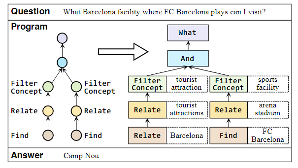
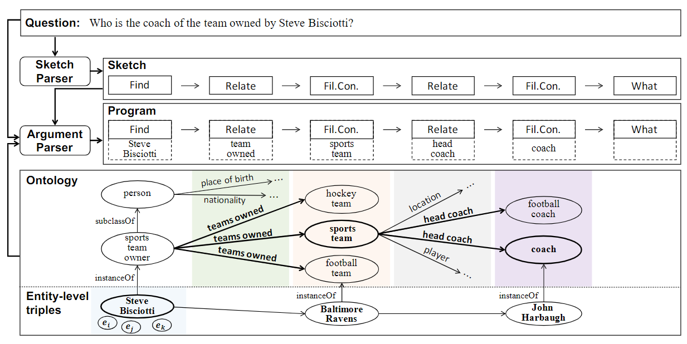
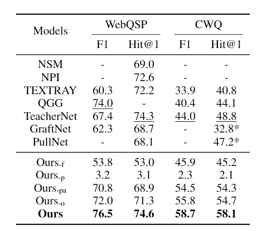

复杂知识库问答（KBQA）中的问题迁移
简介
《Program Transfer for Answering Complex Questionsover Knowledge Bases》是由清华大学和华为合作完成的工作，收录于 ACL 2022 长文中。该文试图通过一个两阶段的方法来完成 KBQA 任务：解析器将 query 解析为知识库操作序列（无参数），参数分析器为每个操作填入参数。通过在复资源知识库预训练，显著提升了在低资源知识库上的 KBQA 性能。
本文所讲的方法是语义解析的思想，将 query 先转化为知识库的操作序列，如下图所示。分析出 query 对应的操作序列（Find，Relate..），再为每个操作填入参数（实体、关系等），执行操作即可得到结果。

背景
知识库问答，即 KBQA，旨在利用结构化的知识库来解答 query。在基于知识库的问答综述（KBQA）中提到了，KBQA 有两种主流方法，语义解析的方法将 query 转化为 SQL 语句，执行即可得到结果；信息检索的方法在特定子图中将实体按相关性排序，最终得到结果。复杂 KBQA 是指需要处理多跳逻辑的 KBQA 问题。这种情况下，KBQA 所面临的推理路径的监督数据缺失、语义理解能力不足、检索空间过大等问题会更为突出。
程序规约是指将 KBQA 问题规约为某个可执行的程序，也就是语义解析的思想。近些年来，一些知识库提供了监督的程序规约信号，在这些知识库上的程序规约问答取得了大幅性能提升。如何使用这些监督信号，提升低资源知识库上的性能呢？本文将其定义为程序迁移任务，该任务面临以下挑战：
- 域异构：由于语言和知识的多样性，源知识库和目标知识库上的知识、问题的表现形式可能相去甚远。
- 未知的元素：源知识库的知识覆盖率往往相当有限，例如 KBQA Pro 数据集只覆盖了 3.9% 的关系和 0.24% 的维基百科概念。
- 过大的搜索空间：每个知识库操作可选的参数很多，搜索知识库和操作和可选参数不现实。
本文的贡献包括：
- 首次提出复杂 KBQA 的程序迁移方法
- 为程序迁移提出一个两阶段解析框架和本体剪枝策略
- 通过扩展实验和消融实验证实了程序迁移的有效性
框架结构
这一部分其实非常简单，对着下面这张图就能解释清楚，不需要任何数学公式。

- BERT+GRU 将 query 映射为无参数操作序列（与知识库无关）
- 利用上一步每个操作的 hidden state 投影后在可选参数空间做 softmax，选择参数
- 参数剪枝：根据 query 维护可能的域、关系、实体集合，并随着参数序列的自回归过程迭代更新。
源域预训练
损失函数包含两部分：操作序列的交叉熵和参数位置的交叉熵，即两个分类任务损失之和。 \[ \mathcal {L}^{pretrain}=-\sum_{(x^S,y^S)\in D^S}(logp(y^S_s|x^S)+\sum_{t=1}^{|y_s|}logp(arg_t^S|x^S,o_t^S,\mathcal P)) \]
目标域微调
由于目标域缺少源域的监督程序归纳信号，因此需要通过强化学习 / EM 算法来微调。主要步骤是先搜索得到若干个可能的程序，然后执行程序根据结果更新参数。
实验
数据集
- 源域：KBQA Pro
- 目标域：WebQuestionSP，ComplexWebQuestions (CWQ)
- 知识库：Freebase
基线
- 语义解析：TEX-TRAY，QGG，TeacherNet
- 信息检索：Graft-Net，PullNet
- 消融实验基线：\(Ours_{-f}\)（未微调），\(Ours_{-p}\)（未预训练），\(Ours_{-pa}\)（未预训练参数解析器），\(Ours_{-o}\)（缺少本体剪枝）
评估指标
- F1
- Hits@1：Hits@n 是指正例中处在前 n 个结果中的比例，Hits@1 也就是模型结果第一名为正确结果的比例
由于数据集中的问题有多个答案，F1 更好地反映了答案的覆盖程度。
实验结果

值得关注的是 \(Ours_{-p}\) 极差的结果和 \(Ours_{-f}\) 的一般表现，表明了预训练的重要性。并且移去预训练参数解析器和本体剪枝策略都会对模型效果有较大影响。
总结
这篇论文还是蛮有意思的，用一个比较贴近人认知的框架，把迁移学习应用到 KBQA 中并证实了其有效性。
近期还会从各高校 ACL2022 录取宣传中找一些值得读的论文。等到 ACL 2022 公布 accepted list 了就不用这么折腾了。
碎碎念：我也好想发一篇论文啊。